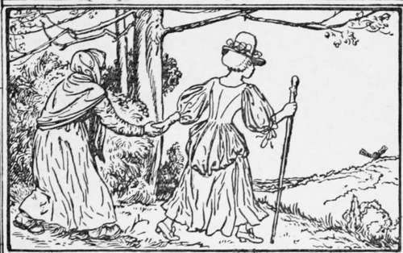
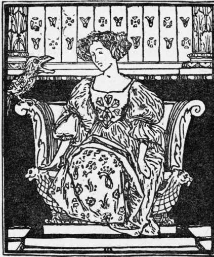

The Robber Bridegroom
Description
This section is from the book "Household Tales by Brothers Grimm", by Brothers Grimm. Also available from Amazon: Household Tales by Brothers Grimm.
The Robber Bridegroom
There was once a miller who had one beautiful daughter, and as she was grown up, he was anxious that she should be well married and provided for. He said to himself, "I will give her to the first suitable man who comes and asks for her hand." Not long after a suitor appeared, and as he seemed to be very rich and the miller could see nothing in him with which to find fault, he betrothed his daughter to him. But the girl did not care for the man as a girl ought to care for her betrothed husband. She did not feel that she could trust him, and she could not look at him nor think of him without an inward shudder. One day he said to her, " You have not yet paid me a visit, although we have been betrothed for some time." "I do not know where your house is," she answered. " My house is out there in the dark forest," he said. She tried to excuse herself by saying that she would not be able to find the way thither. Her betrothed only replied, "You must come and see me next Sunday; I have already invited guests for that day, and that you may not mistake the way, I will strew ashes along the path."
When Sunday came, and it was time for the girl to start, a feeling of dread came over her which she could not explain, and that she might be able to find her path again, she filled her pockets with peas and lentils to sprinkle on the ground as she went along. On reaching the entrance to the forest she found the path strewed with ashes, and these she followed, throwing down some peas on either side of her at every step she took. She walked the whole day until she came to the deepest, darkest part of the forest. There she saw a lonely house, looking so grim and mysterious, that it did not please her at all. She stepped inside, but not a soul was to be seen, and a great silence reigned throughout. Suddenly a voice cried :
"Turn back, turn back, young maiden fair.
Linger not in this murderer's fair."
The girl looked up and saw that the voice came from a bird hanging in a cage on the wall. Again it cried :
"Turn back, turn back, young maiden fair.
Linger not in this murderer's fair."
The girl passed on, going from room to room of the house, but they were all empty, and still she saw no one. At last she came to the cellar, and there sat a very, very old woman, who could not keep her head from shaking. " Can you tell me," asked the girl, " if my betrothed husband lives here ?"
"Ah, you poor child," answered the old woman, "what a place for you to come to! This is a murderer's den. You think yourself a promised bride, and that your marriage will soon take place, but it is with death that you will keep your marriage-feast. Look, do you see that large cauldron of water which I am obliged to keep on the fire ? As soon as they have you in their power they will kill you without mercy, and cook and eat you, for they are eaters of men. If I did not take pity on you and save you, you would be lost."
Thereupon the old woman led her behind a large cask, which quite hid her from view. "Keep as still as a mouse," she said; "do not move or speak, or it will be all over with you. To-night, when the robbers are all asleep, we will flee together. I have long been waiting for an opportunity to escape."
The words were hardly out of her mouth when the godless crew returned, dragging another young girl along with them. They were all drunk, and paid no heed to her cries and lamentations. They gave her wine to drink, three glasses full, one of white wine, one of red, and one of yellow, and w ith that her heart gave way and she died. Then they tore off her dainty clothing, laid her on a table, and cut her beautiful body into pieces, and sprinkled salt upon it.
The poor betrothed girl crouched trembling and shuddering behind the cask, for she saw what a terrible fate had been intended for her by the robbers. One of them now noticed a gold ring still remaining on the little finger of the murdered girl, and as he could not draw it off easily, he took a hatchet and cut off the finger; but the finger sprang into the air, and fell behind the cask into the lap of the girl who was hiding there. The robber took a light and began looking for it, but he could not find it. "Have you looked behind the large cask," said one of the others. But the old woman called out, "Come and eat your suppers, and let the thing be till to-morrow; the finger won't run away."
" The old woman is right," said the robbers, and they ceased looking for the finger and sat down.
The old woman then mixed a sleeping draught with their wine, and before long they were all lying on the floor of the cellar, fast asleep and snoring. As soon as the girl was assured of this, she came from behind the cask. She was obliged to step over the bodies of the sleepers, who were lying close together, and every moment she was filled with renewed dread lest she should awaken them. But God helped her, so that she passed safely over them, and then she and the old woman went upstairs, opened the door, and hastened as fast as they could from the murderer's den. They found the ashes scattered by the wind, but the peas and lentils had sprouted, and grown sufficiently above the ground to guide them in the moonlight along the path. All night long they walked, and it was morning before they reached the mill. Then the girl told her father all that had happened.
The day came that had been fixed for the marriage. The bridegroom arrived and also a large company of guests, for the miller had taken care to invite all his friends and relations. As they sat at the feast, each guest in turn was asked to tell a tale; the bride sat still and did not say a word.
"And you, my love," said the bridegroom, turning to her, "is there no tale you know? Tell us something."
"I will tell you a dream, then," said the bride. "I went alone through a forest and came at last to a house; not a soul could I find within, but a bird that was hanging in a cage on the wall cried:
"Turn back, turn back, young maiden fair.
Linger not in this murderer's fair." and again a second time it said these words.
" My darling, this is only a dream.
"I went on through the house from room to room, but they were all empty, and everything was so grim and mysterious. At last I went down to the cellar, and there sat a very, very old woman, who could not keep her head still. I asked her if my betrothed lived here, and she answered, 'Ah, you poor child, you are come to a murderer's den; your betrothed does indeed live here, but he will kill you without mercy and afterwards cook and eat you.'
" My darling, this is only a dream.
"The old woman hid me behind a large cask, and scarcely had she done this when the robbers returned home, dragging a young girl along with them. They gave her three kinds of wine to drink, white, red and yellow, and with that she died.
"My darling, this is only a dream.
" Then they tore off her dainty clothing, and cut her beautiful body into pieces and sprinkled salt upon it.
" My darling, this is only a dream.
"And one of the robbers saw that there was a gold ring still left on her finger, and as it was difficult to draw off, he took a hatchet and cut off her finger; but the finger sprang into the air and fell behind the great cask into my lap. And here is the finger with the ring," and with these words the bride drew forth the finger and shewed it to the assembled guests.
The bridegroom, who during this recital had grown deadly pale, jumped up and tried to escape, but the guests seized him and held him fast. They delivered him up to justice, and he and all his murderous band were condemned to death for their wicked deeds.
Continue to:
- prev: The Jew In The Bush
- Table of Contents
- next: Ashputtel
Tags
fairy tales, children's stories, brothers grimm, household tales